Explore Our
Protected Structures
Different crops. Different goals. We design and deliver the right protected structure for your farm, location and budget.
-

-
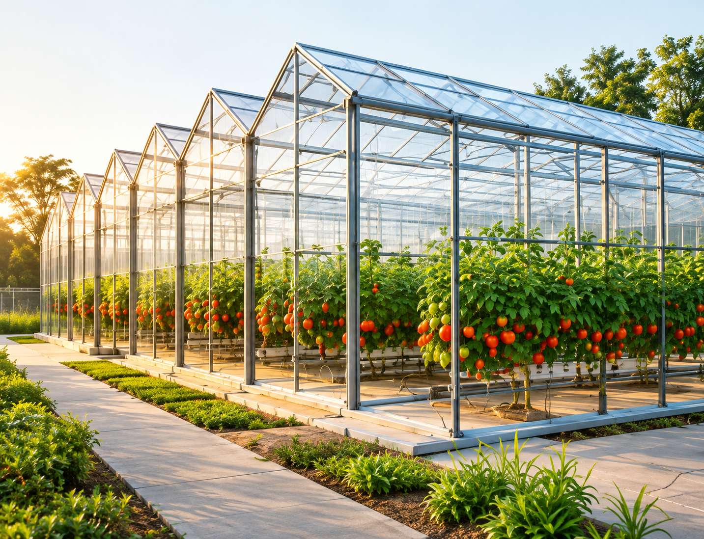
-
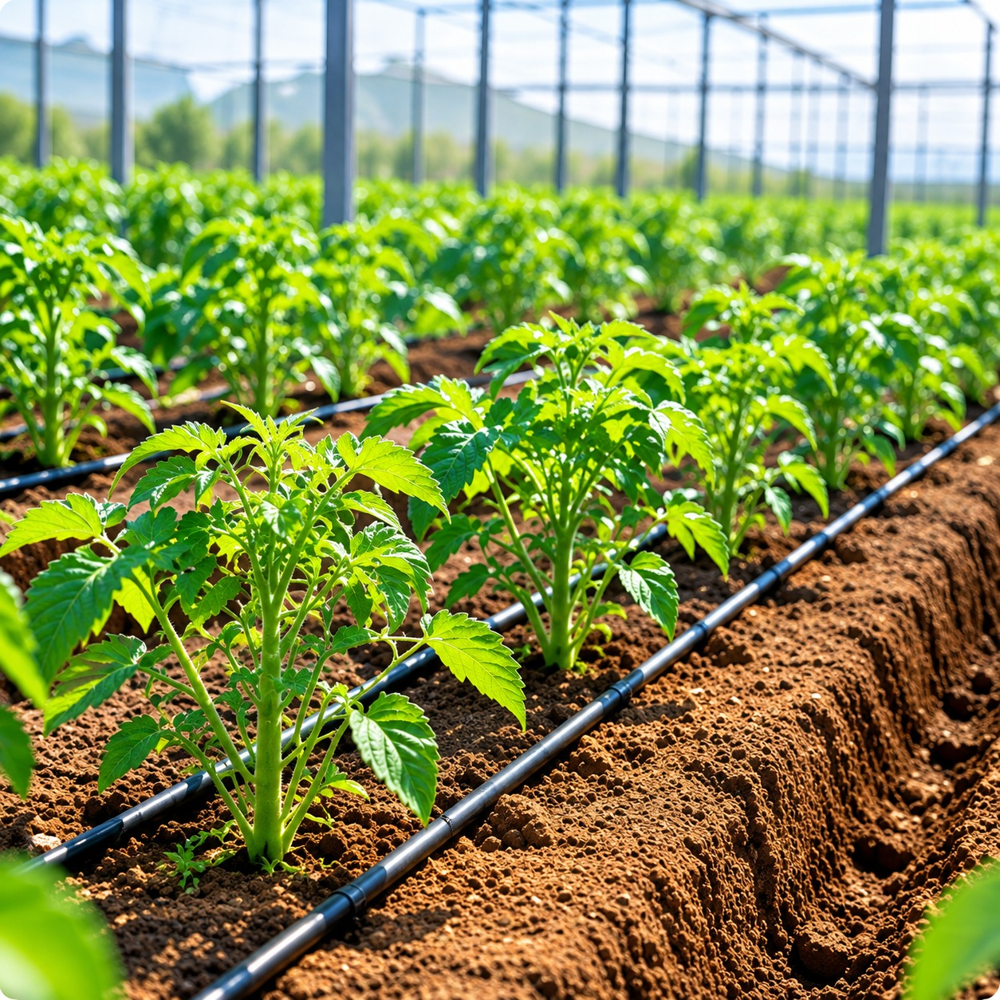
-
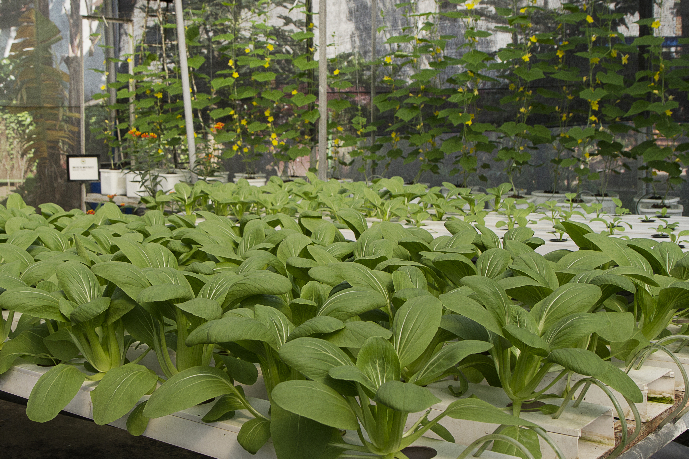
-
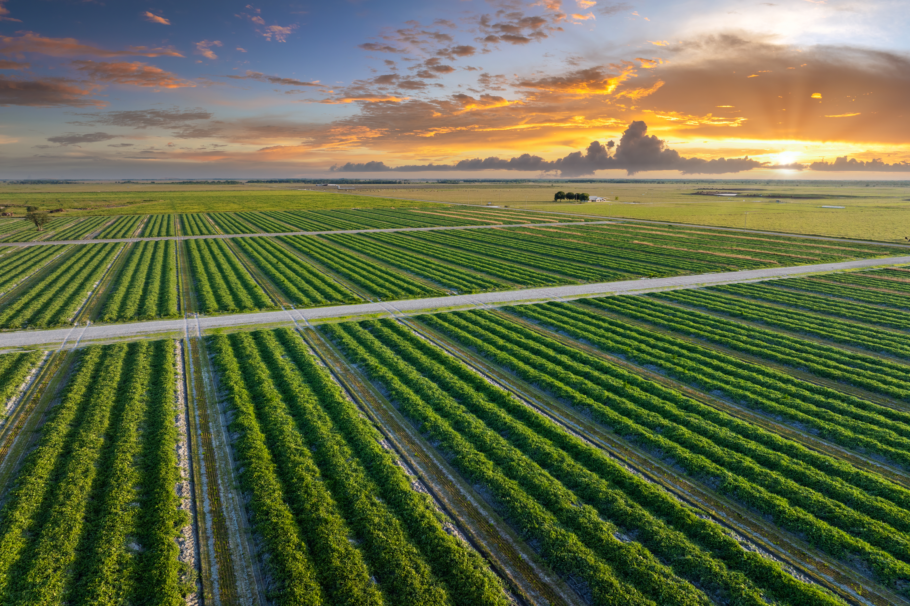
-
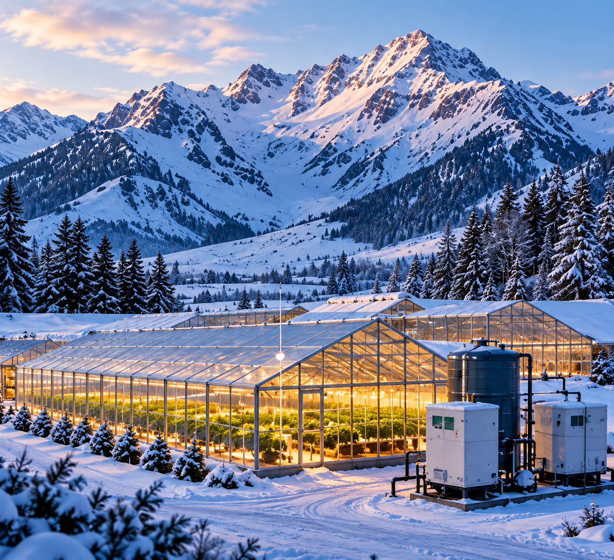
Compare Our
Protected Structures
Every farm is unique. Use this quick reference to find which structure fits your crop type, climate and budget.
|
|
|
|
|
|
|
|
|---|---|---|---|---|---|---|
| Climate Control | Active (Fan + Pad) | Passive Vents | Ambient | Ambient | Ambient | Full Precision |
| Cost Range | Medium–High | Medium | Low | Low–Medium | Medium | Premium |
| Best Crops | Exotics, Leafy Greens | Vine Crops, Tomato | Indian Vegetables | Mixed Vegetables | Berries, Flowers | Premium, Cannabis |
| Life Span | 15–20 Years | 15–20 Years | 8–12 Years | 10–15 Years | 20+ Years | 25+ Years |
| Subsidy Eligible | Yes | Yes | Yes | Yes | Conditional | Not Eligible |
Make the Right Choice
Select the most suitable structure based on your farm conditions and goals.
-
Location
Altitude, proximity to market and local conditions.
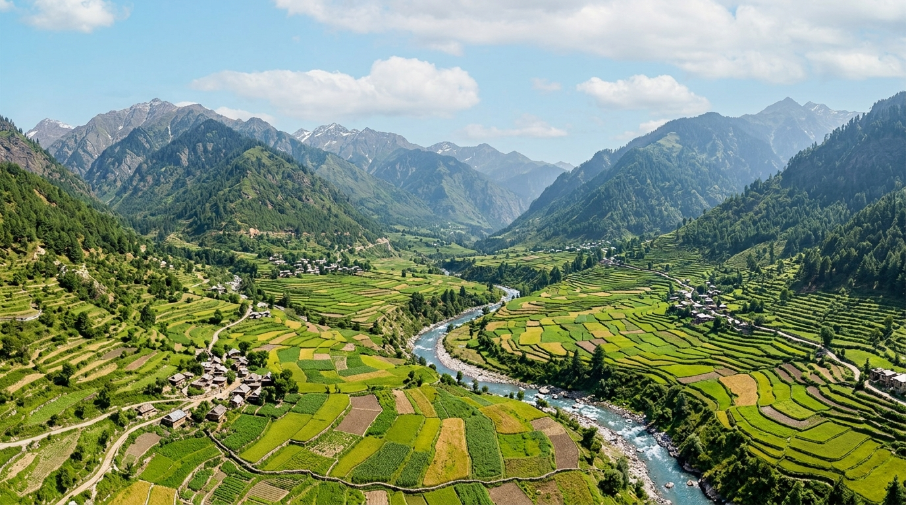
- Altitude & terrain
- Market access
- Local environment
-
Climate
Temperature, rainfall, humidity and wind.
- Temperature range
- Rainfall & sunlight
- Humidity & wind
-
Crop
Current and future crops.
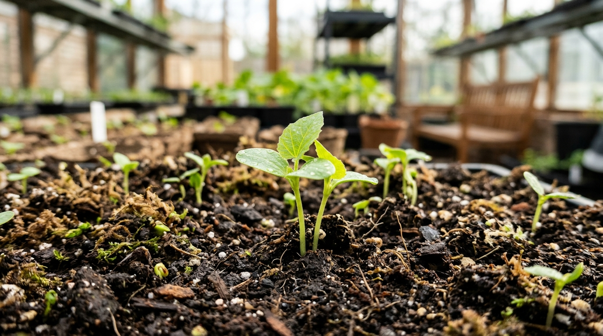
- Crop type
- Rainfall pattern
- Future expansion
-
Water
Availability and quality.
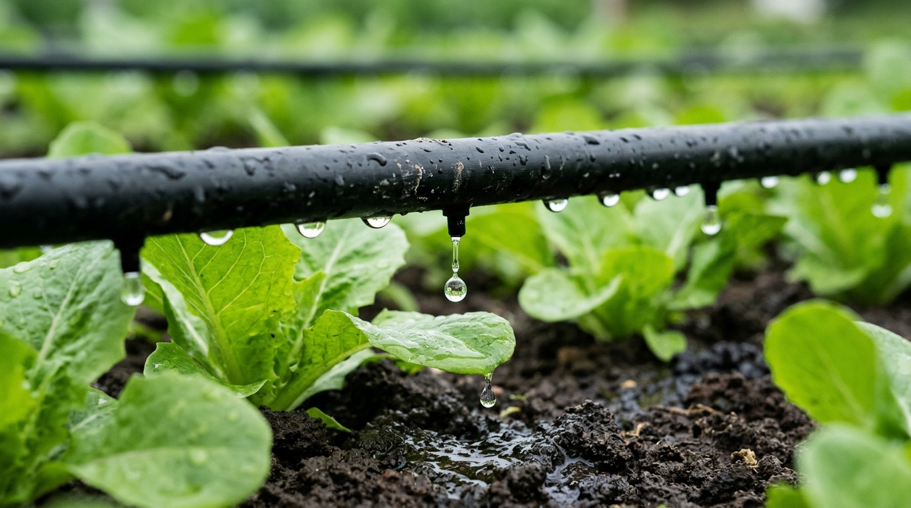
- Water availability
- Water quality
- Irrigation method
-
Budget
Initial investment and running cost.
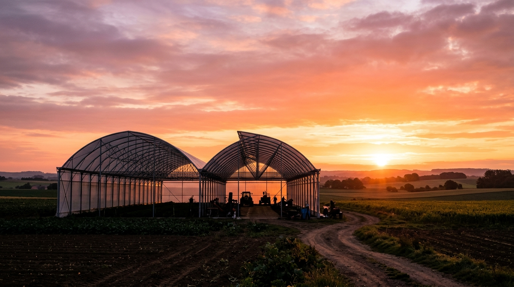
- Initial investment
- Operating cost
- ROI expectations
-
Production Goals
Yield, quality and target markets.
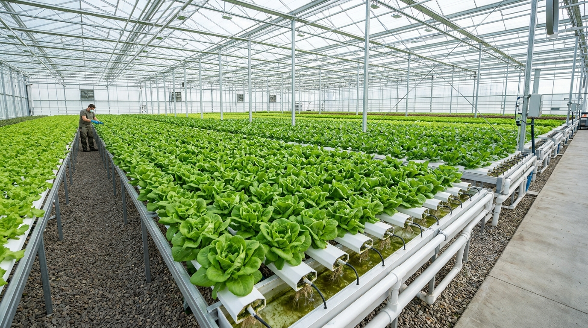
- Target yield
- Quality standards
- Market type
Engineering &
Customisation
Designed around your farm, your climate and your crop.
We engineer every structure with the right design, materials and systems to deliver long-term performance for your unique farming conditions.
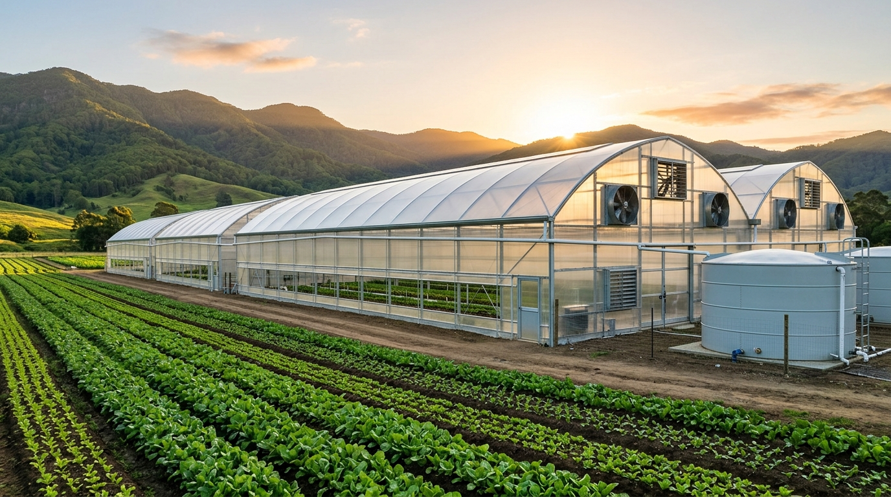
-
01
Structural Design
Engineered for strength, durability and site conditions.
-
02
Cladding
High-quality films and panels for optimal light and protection.
-
03
Ventilation
Natural and mechanical solutions for better airflow and healthy crops.
-
04
Cooling
Fan & pad and advanced cooling systems for temperature control.
-
05
Crop Support
Trellis, hanging and specialized systems for different crops.
-
06
Site-Specific Configuration
Customized layouts, dimensions and systems for your unique farm.
Real Farms. Real Results.
A few of our recent installations across different crops and regions.
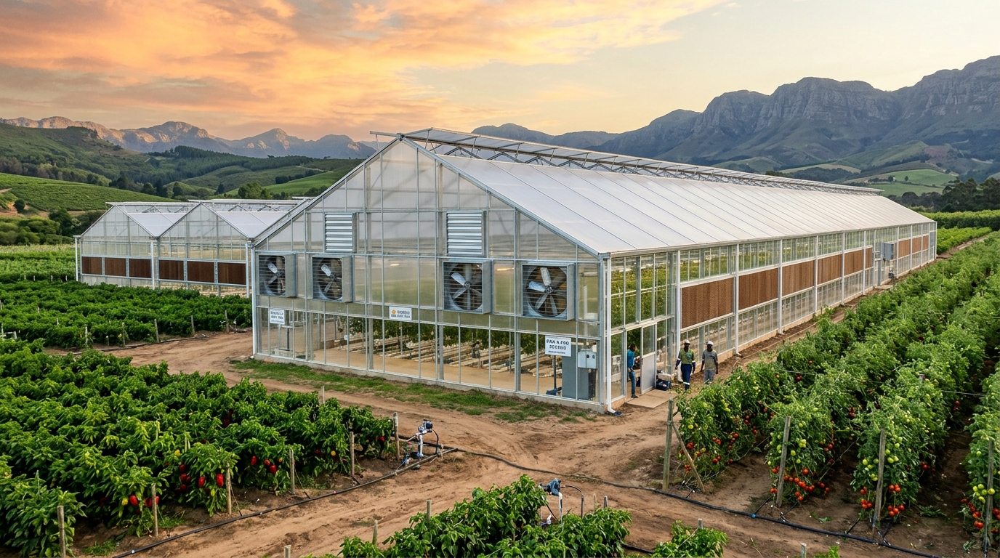
Fan & Pad Polyhouse
Controlled environment for higher yields and consistent crop quality.
View Project Details- 12 Acres Project area
- Nashik, Maharashtra Location
- Capsicum, Tomato Crop